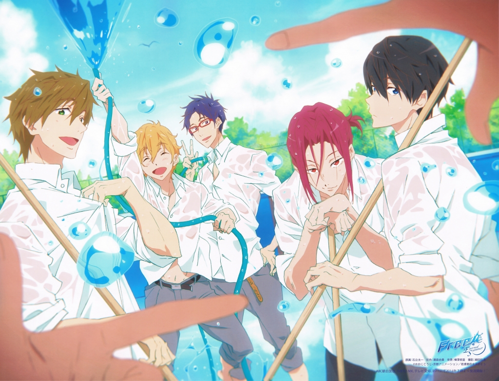

<DOCTYPE html>
<html lang = "ja">
<head>
<meta charset="utf-8">
<meta name=”viewport” content=”width=device-width,initial-scale=1.0″>
<title>Free!</title>
<link rel="stylesheet" href=free.CSS">
<style>


</style>
</head>
<body>

<h1 align="center">あらすじ</h1> 
<br><h2  align="center"> 
<br>七瀬遙、橘真琴、葉月渚は小学生時代通っていたスイミングクラブが取り壊されると聞き、
<br>タイムカプセルで埋めた優勝トロフィーを掘り起こそうと夜中に侵入し、そこで同じクラブ
<br>だった松岡凛と再会する。しかし凛は昔と違い冷淡な態度を取る。再会をきっかけに渚の提案で
<br>岩鳶高校水泳部を創部、陸上部から勧誘した竜ヶ崎怜と、凛の妹の松岡江をマネージャーに加え
<br>大会出場を目指す。真琴からその話を聞き、水泳に挫折していた凛も鮫柄学園の水泳部に入部する。</br>


</body>


</html>